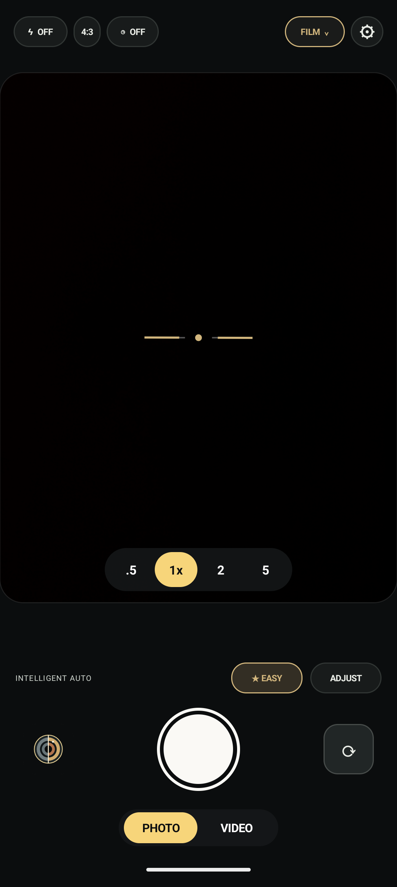
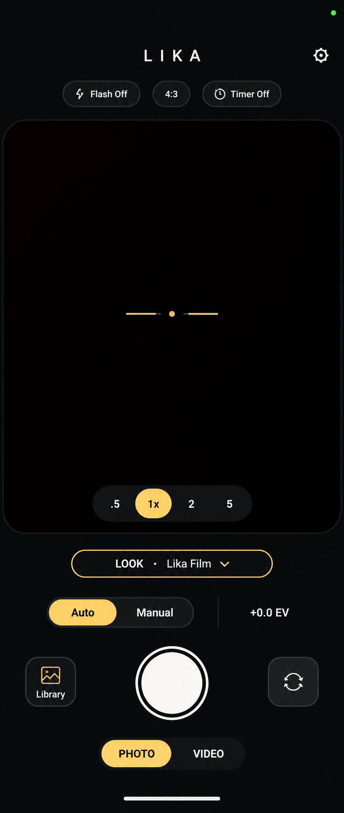
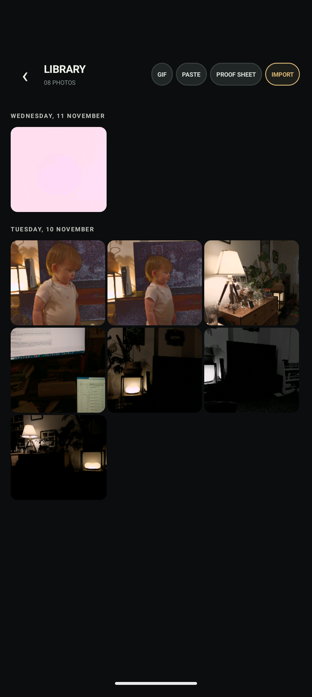
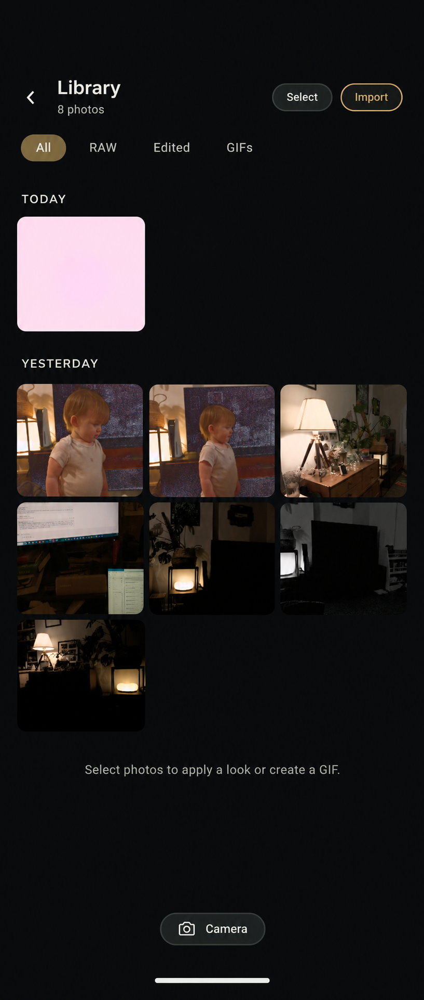
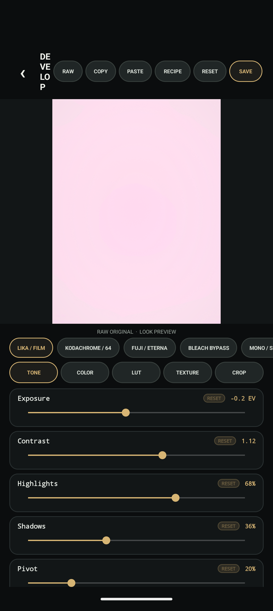
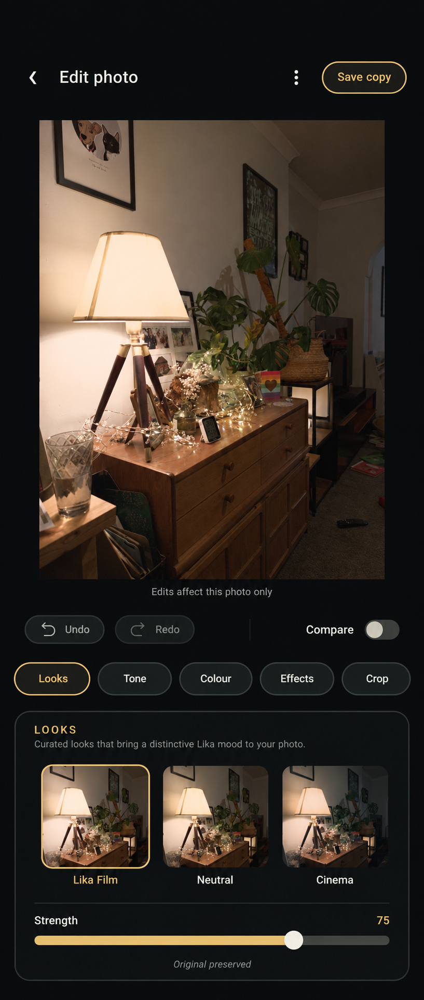
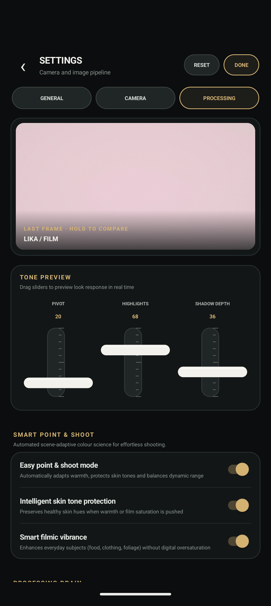
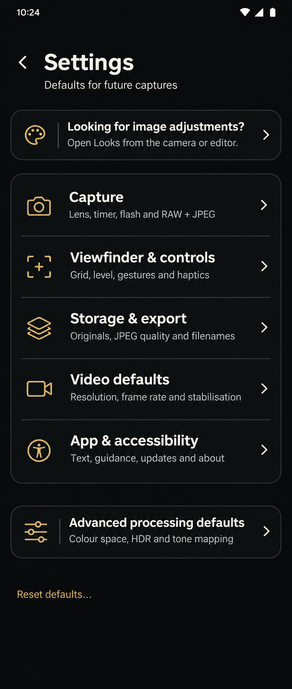
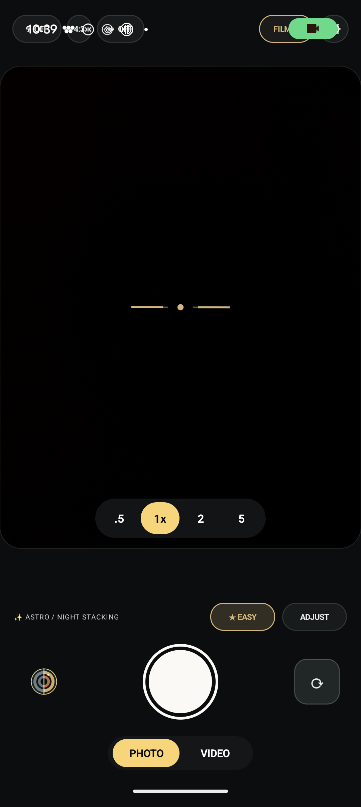
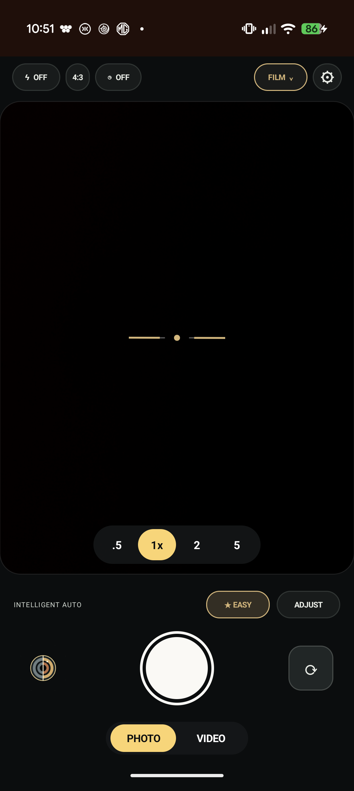

Camera
Capture comes first



Library
Browse first; act on a selection



Editor & Looks
One photo, one clear editing context



Settings
Preferences, not a second editor



Privacy indicator overlap
The current layout deliberately tucks the header into the central punch-hole lane. Android also uses that lane for the green camera/microphone indicator and transient status icons. The code fix keeps the header below the full status-bar/cutout inset, including while immersive mode hides the bar.




Build and all 74 unit tests passed. Installed 0.1.79-insets-fix over the existing app with data preserved. On the Pixel 11 Pro, the header moved from y=44 to y=193 pixels and stays below the revealed Android status bar. Edit now opens and develops its preview. No photos were captured, saved, or deleted during this review. Other device sizes and large-font / TalkBack behaviour remain untested.